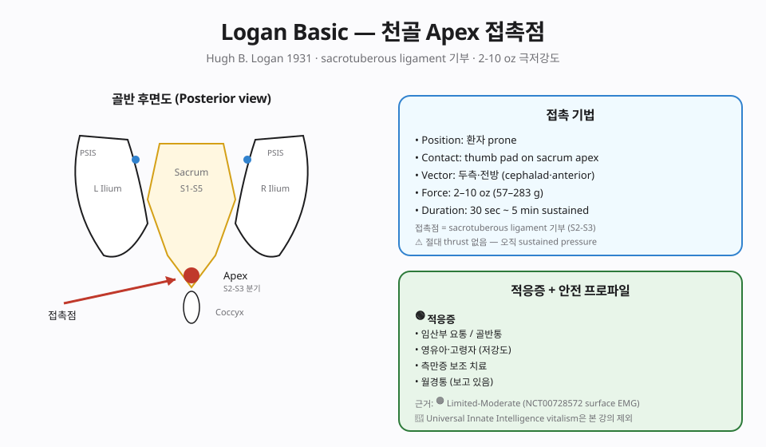
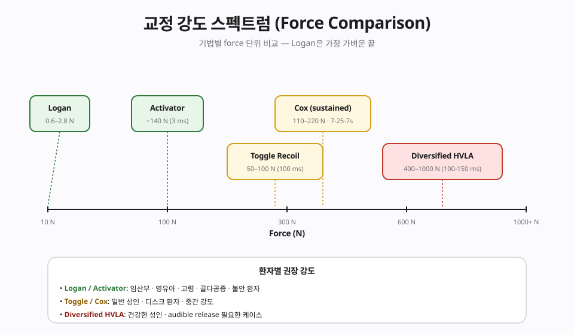

📊 핵심 다이어그램
이 챕터의 핵심 개념을 시각화한 도식.


📘 편집 원칙
근거 기반 의학(EBM) 관점. Vitalism · 전신질환 인과론 · AK 진단 확장 · Cranial rhythm 등 No evidence 주장은 🔴 제외 또는 비판적으로만 언급합니다.
개요
본 챕터가 다루는 기법
천골 apex에 sacrotuberous ligament 부착점을 통한 극저강도 접촉. 2-10 oz(감은 눈꺼풀 누르는 수준) 압력. 임산부·영유아·고령·HVLA 거부 환자에서 🟢 Strong safety profile.
근거 수준 한눈에
근거
🟠 Limited-Moderate — 임산부·소아 안전성 🟢
이론·기전
모든 카이로프랙틱 기법은 Afferentation → 중추 처리 → Efferentation 프레임(Chapter 2 참조)에서 해석합니다. 이 기법이 어떤 구심성 입력을 만들고 어떤 원심 출력을 조절하는지.
창시자와 역사적 맥락
Hugh B. Logan(1881-1944)은 1930년대에 Logan Basic Technique을 정립했고, 1935년 Logan College of Chiropractic을 설립했습니다. 그의 원형 이론은 'sacrum은 척추의 keystone이며 골반 비대칭의 회복이 상행성 보상을 풀어준다'는 가설로, 일부는 근거가 약한 구조주의적 주장이지만 임상적으로는 천골 부위에 가하는 가볍고 지속적인 압력이라는 자극 양식이 분명한 특징을 가집니다. 추력이 없는 sustained-pressure 방식이라는 점에서 다른 카이로프랙틱 기법과 구분됩니다.
생체역학 — Sustained low-load pressure
시술자의 엄지가 천골 첨부(apex)의 천결절인대(sacrotuberous ligament) 근처에 ~5-20 N의 가벼운 압력을 30-60초 이상 sustained로 가합니다. 보조 손은 보상 분절(흉추·경추 등)에 가벼운 접촉을 추가하면서 환자 호흡과 함께 자극을 유지합니다. HVLA가 아닌 지속적 저강도 자극이라는 점이 핵심이며, 통증 과민·임산부·소아 등에서 부담이 적습니다.
신경생리 — Afferentation → Central → Efferentation
- 🟢 Afferentation — 지속적 압력은 Type III 기계수용기(Ruffini)와 Type IV(무수신경) 통각 억제 입력을 활성화. 골반저·천추 부위의 자율신경 신경총 (S2-S4 부교감)에 가까운 자극이 가설.
- 🟡 중추 처리 — 후각 통증 modulation, 부교감 우세 전환에 따른 이완 반응(relaxation response)이 추정됨.
- 🟢 Efferentation — 골반저·천장관절 주변 근육 톤 정상화, 호흡 깊이·이완 증가, 통증 강도 단기 감소.
🟠 근거 수준
Logan Basic은 대규모 RCT가 부족합니다(주로 case series·임상 관찰). 따라서 단독 치료보다 임산부·소아·만성 통증 과민 환자에 대한 보조 자극 양식 으로 위치시키는 것이 적절합니다. 단, vitalistic한 'sacrum이 모든 질병의 원인' 주장은 받아들이지 않습니다.
임상 적용
적응증 — Logan이 합리적 선택이 되는 환자
- 임신 관련 골반/요통 — prone 자세가 어려울 때 lateral 변형
- 소아·청소년 보조 자극
- HVLA가 부담스러운 통증 과민·불안 환자
- 천장관절 기능장애·만성 골반저 긴장
- 급성기 환자의 첫 세션에서 통증 진정을 위한 도입 자극
환자 자세 · 접촉점 · 압력 protocol
- 자세 — Prone(임신 후기는 측와위 또는 무릎 가슴 자세 변형). 하지를 자연스럽게 두고 발끝을 약간 내회전.
- 주 접촉점 — 천골 첨부 외측의 천결절인대(sacrotuberous ligament) 가까이에 시술자의 엄지를 두고, ~5-20 N의 sustained 압력.
- 보조 접촉 — 다른 손으로 흉추·경추의 보상 분절에 가벼운 접촉 (light contact). 환자 호흡에 맞춰 압력을 유지.
- 시간 — 30-60초 sustained, 환자 호흡·표정·근방어 변화를 관찰하며 연장 가능. 총 시술 시간은 부담 없는 범위.
- 추력 금지 — Logan Basic은 추력 기법이 아닙니다. cavitation이 목표가 아니며, sustained-pressure만으로 자극을 전달합니다.
🔴 안전 · 금기 · 다학제 협진
금기
- 절대 금기 — 천골/골반 부위의 진행성 종양·감염·골절·골수염, 진행성 신경학적 결손, 임신 중 산과적 위험(태반 박리·전치태반 등) — 산부인과 클리어런스 필수.
- 주의 — 항문/회음부 출혈 경향, 직장 종양, 골반 수술 직후. 시술 중 통증 악화·새로운 신경 증상은 즉시 중단.
🔗 다학제 협진
임신 관련 골반 통증은 산부인과와 협진하며, 만성 골반저 통증은 비뇨의학과·산부인과· 물리치료(pelvic floor PT)와 통합. Logan Basic은 보조 자극 양식으로 위치시키고, 1차 치료가 아닌 통합 프로토콜의 일부로 사용합니다.
근거 수준
| 적응증 | 근거 수준 | 비고 |
|---|---|---|
| 본 기법 주된 적응증 | 🟠 Limited-Moderate — 임산부·소아 안전성 🟢 | 상세는 강의록 MD 참조 |
| 🔴 전신질환·내장·자폐·ADHD·천식·고혈압 치료 | 🔴 No evidence | Cochrane·PubMed 근거 없음 |
🔴 비판적 시각
근거 연구 제한적
Surface EMG 연구(NCT00728572) 일부 근거, 월경통·측만증 증례 보고. RCT 부족 — 효과 크기는 🟠 Limited-Moderate. 안전성만큼은 확실 — 다른 기법 금기 환자에서 대안.
상세 비판 문헌 리뷰와 과장 vs 근거 비교표는 강의록 MD 확장판에서 다룹니다.
강의 자료
11/11 자료 준비 완료.
📖 강의록
🎧 팟캐스트
🎥 AI 동영상
🎴 PPTX 슬라이드 (4개 × 15장)
15장 🎴Part 2 · Aff/Def/Eff ✅ 준비 완료
15장 🎴Part 3 · Assessment ✅ 준비 완료
15장 🎴Part 4 · 임상·비판 ✅ 준비 완료
15장
📄 Report Markdown
NotebookLM 자동 생성 📄Report 2/4 ✅ 준비 완료
NotebookLM 자동 생성 📄Report 3/4 ✅ 준비 완료
NotebookLM 자동 생성 📄Report 4/4 ✅ 준비 완료
NotebookLM 자동 생성
NotebookLM 노트북: 열기 →